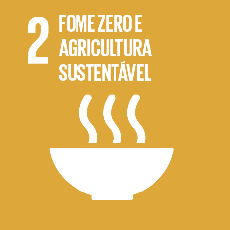
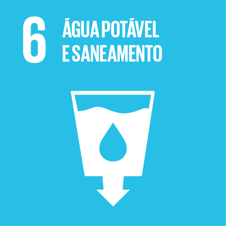
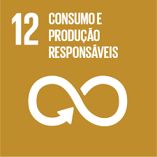

OS OBJETIVOS DO DESENVOLVIMENTO SUSTENTÁVEL.
Ao total, são 17 objetivos que compõem os ODS atualmente. Entre eles, temos objetivos como educação de qualidade, vida na água e energia limpa e acessível. A partir deles, a ONU pretende promover uma agenda de desenvolvimento que vise garantir um futuro melhor – em todos os âmbitos – tanto para a humanidade quanto para o planeta Terra.
Os objetivos contemplados nos ODS são baseados nos oito ODM – Objetivos de Desenvolvimento do Milênio. Dessa forma, a agenda da ONU para essa década e os ODS foram criados para que, em um período mais curto de tempo, fossem levantadas e implementadas propostas para garantir os objetivos que compõem os ODM.
Conheça Objetivos de Desenvolvimento Sustentável:
Objetivo 1: Acabar com a pobreza em todas as suas formas, em todos os lugares

Objetivo 2: Acabar com a fome, alcançar a segurança alimentar e melhoria da nutrição e promover a agricultura sustentável
Objetivo 3: Assegurar uma vida saudável e promover o bem-estar para todos, em todas as idades
Objetivo 4: Assegurar a educação inclusiva e equitativa e de qualidade, e promover oportunidades de aprendizagem ao longo da vida para todos
Objetivo 5: Alcançar a igualdade de gênero e empoderar todas as mulheres e meninas

Objetivo 6: Assegurar a disponibilidade e gestão sustentável da água e saneamento para todos
Objetivo 7: Assegurar o acesso confiável, sustentável, moderno e a preço acessível à energia para todos
Objetivo 8: Promover o crescimento econômico sustentado, inclusivo e sustentável, emprego pleno e produtivo e trabalho decente para todos
Objetivo 9: Construir infraestruturas resilientes, promover a industrialização inclusiva e sustentável e fomentar a inovação

Objetivo 10: Reduzir a desigualdade dentro dos países e entre eles

Objetivo 11: Tornar as cidades e os assentamentos humanos inclusivos, seguros, resilientes e sustentáveis
Objetivo 12: Assegurar padrões de produção e de consumo sustentáveis
Objetivo 13: Tomar medidas urgentes para combater a mudança do clima e seus impactos
Objetivo 14: Conservação e uso sustentável dos oceanos, dos mares e dos recursos marinhos para o desenvolvimento sustentáve

Objetivo 15: Proteger, recuperar e promover o uso sustentável dos ecossistemas terrestres, gerir de forma sustentável as florestas, combater a desertificação, deter e reverter a degradação da terra e deter a perda de biodiversidade

Objetivo 16: Promover sociedades pacíficas e inclusivas para o desenvolvimento sustentável, proporcionar o acesso à justiça para todos e construir instituições eficazes, responsáveis e inclusivas em todos os níveis
Objetivo 17: Fortalecer os meios de implementação e revitalizar a parceria global para o desenvolvimento sustentável